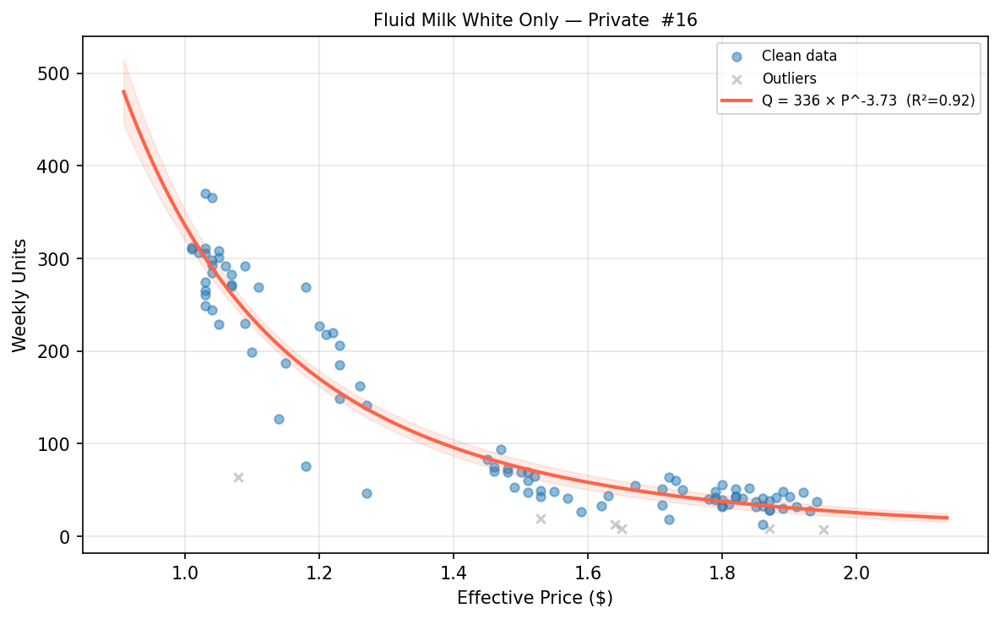
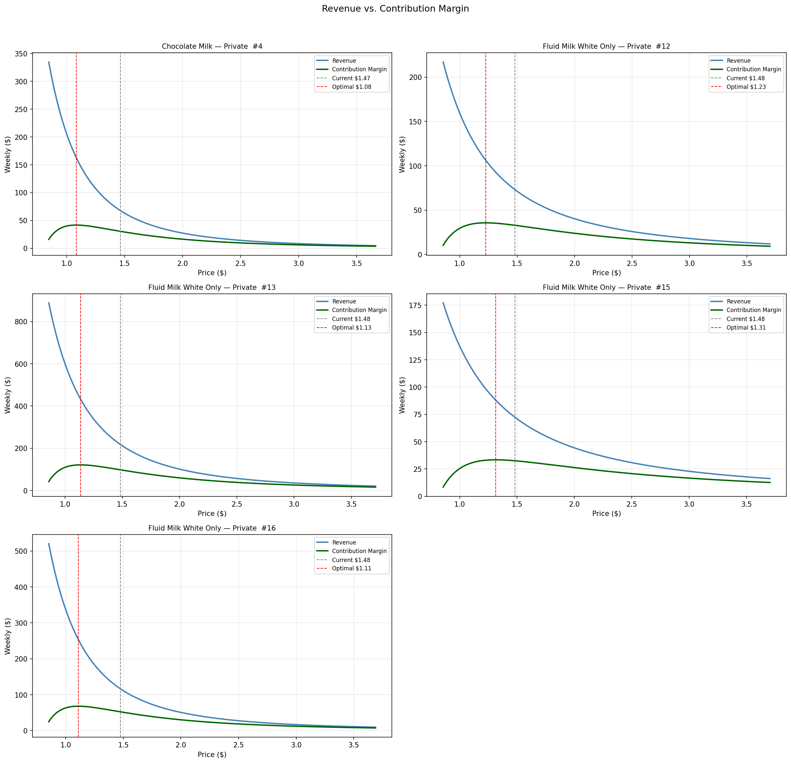
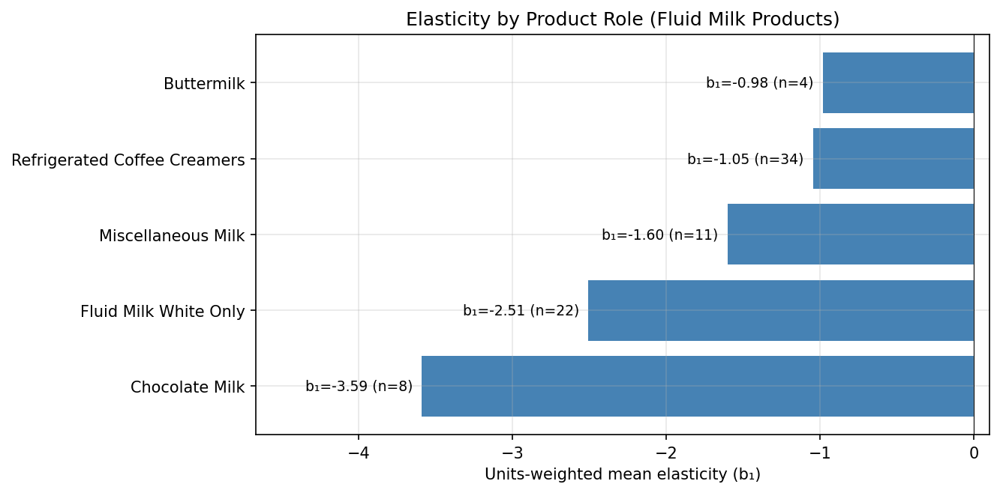

5.1 価格弾力性と価格設定の意思決定
日本語版について
このページは英語版 Marketing Science in Python のAI翻訳です。英語版を正本とし、差異がある場合は英語版を優先してください。コード、Notebook、画像内の文字は英語のままです。 英語版を読む
適切な価格はいくらでしょうか？
営業チームは価格を下げたいと考えます。顧客に最も近く、価格を下げると販売数量が動くという明らかな効果を見ているからです。
財務チームは利益を高めたいと考えます。同じトレードオフを反対側から見て、追加の数量を安く売りすぎると、売上が増えても利益が消えることを理解しているからです。
マーケティングは2つの見方の間に位置しますが、平均を取るわけではありません。その役割は、顧客の反応、ブランドの位置づけ、コマーシャル目標を結びつけることです。数量や売上を追うとき、利益を守るとき、価格自体がポジショニングのシグナルになるときを判断します。
どちらも部分的には正しいのです。価格は数量へ影響しますが、数量が常に主な目標とは限りません。ビジネスが求めるものは、売上、利益、来店客数、市場シェア、または単なる在庫処分や価格ポジションの維持かもしれません。本当に欠けているのは目標ではなく、価格が動いたときに数量が実際にどれだけ変わるかという理解です。
価格弾力性から、その理解が得られます。ビジネス目標を決めるものではありません。数量、売上、利益、ポジショニングのいずれが目標であっても、価格設定の意思決定をその目標に照らして比較できる反応曲線を提供します。
価格弾力性とは何か？
売れ筋シリアルの価格を10%上げるか検討しているとします。販売数量は5%減るでしょうか、それとも20%でしょうか。その違いによって、価格変更が販売数量、売上、利益を改善するのか、単に買い物客を遠ざけるのかが決まります。
需要の価格弾力性は、価格変化に対する販売数量の感度を測定します。
\[ \varepsilon = \frac{\% \Delta \text{Quantity}}{\% \Delta \text{Price}} \]
通常財では、弾力性は負です。価格を上げると、販売数量が減ります。簡潔にするため、通常は絶対値で説明します。
- \(|\varepsilon| = 1.6\)：価格を10%上げると、販売数量が約16%減ります。需要は弾力的です。数量が価格の上昇より速く減るため、値上げにはリスクがあります。
- \(|\varepsilon| = 0.5\)：価格を10%上げても、販売数量は約5%しか減りません。需要は非弾力的です。商品には価格決定力があり、値上げによって売上を伸ばせます。単位原価が安定し、分かっていれば、限界利益も改善する可能性があります。
同じ弾力性推定値で、異なる価格設定の問いを支援できます。
- 価格を動かすべきか？ 弾力的な需要では値上げのリスクが高くなり、非弾力的な需要では魅力が高まります。
- どの成果を最適化すべきか？ 弾力性に価格と数量を組み合わせると、販売数量と売上を比較できます。変動費を加えれば、同じ曲線で限界利益を比較できます。
価格弾力性に必要なデータ
価格弾力性を推定するには、実際の価格変動を含む売上データが必要です。代表的なソースは、POSスキャナーデータ、パネルデータ、社内のオンライン小売記録です。棚価格ではなく、実効価格（売上÷販売数量）を使います。
\[ \text{Price}_{\text{effective}} = \frac{\text{Revenue}}{\text{Units}} \]
実効価格は、値引き、まとめ買いオファー、週途中の価格変更を、表示価格より確実に捉えます。
時間の粒度と商品の粒度という、2つの設計上の選択が基盤になります。日次データにはノイズが多く、月次データは月内の価格変更を隠す可能性があるため、通常、週次が最適な時間粒度です。商品側はSKU単位から始めます。一つのSKUには、一つのパッケージサイズ、一つの基準価格、一つの需要反応があるため、価格シグナルを読み取りやすくなります。
モデルを当てはめる前に、3つを確認します。
- 分析単位。 デフォルトではSKU×週を使います。SKU×週が疎すぎる場合、正当化できる集約方法が2つあります。価格変更があまり頻繁でなく、月次の変動がまだ見えるなら、SKU×月へ移ります。または、カラーバリエーション、フレーバーバリエーション、同じ買い物客上の役割を持つ同価格帯の商品など、本当に比較可能なSKUを組み合わせて、SKU群×週へ移ります。同じブランドの商品という理由だけで集約してはいけません。
- 価格変動。 複数の異なる価格点があり、一つの価格が履歴を支配せず、価格反応とノイズを切り分ける十分な期間が必要です。大まかな基準として、少なくとも3つの価格点、10%の価格幅、26週間の履歴を目指します。
- 歪んだ需要シグナル。 欠品、通常でないプロモーション、祝日、一度限りのイベントによって、価格とは無関係な理由で数量が動く場合があります。通常の価格反応として扱う前に、こうした観測へフラグをつけるか、削除します。
需要曲線を推定する
中心となるモデルは、弾力性一定モデル、またはべき乗則モデルです。
\[ Q = b_0 \times P^{b_1} \]
ここで、\(Q\) は数量、\(P\) は価格、\(b_0\) は尺度パラメータ、\(b_1\) は弾力性です。通常財では \(b_1\) は負になります。対数を取ると、\(\log Q = \log b_0 + b_1 \log P\) という線形関係になり、\(b_1\) は両対数空間における傾きです。このモデルは、価格範囲全体で弾力性が一定であると仮定します。強い仮定ですが、多くの消費財に対する妥当な出発点です。
対数空間で当てはめてから元へ戻すことで生じる再変換バイアスを避けるため、scipy.optimize.curve_fit を使い、元の非対数空間で曲線を当てはめます。
import numpy as np
from scipy.optimize import curve_fit
def power_model(price, b0, b1):
"""Q = b0 * Price^b1"""
return b0 * np.power(price, b1)
p0 = [df["units"].mean(), -1.5]
popt, pcov = curve_fit(
power_model,
df["price"].values,
df["units"].values,
p0=p0,
maxfev=10000,
)
b0, b1 = popt
print(f"Scale (b0): {b0:.1f}")
print(f"Elasticity (b1): {b1:.2f}")付属Notebookでは、2段階の推定も行います。最初に全データへ当てはめ、実績数量÷予測数量が0.3〜3.0など妥当な範囲から外れる観測へフラグをつけ、それを除いて再度当てはめます。
# Pass 1: fit on all data
popt_1, _ = curve_fit(power_model, prices, units, p0=p0, maxfev=10000)
# Identify outliers
predicted = power_model(prices, *popt_1)
ratio = units / predicted
mask = (ratio > 0.3) & (ratio < 3.0)
# Pass 2: refit on clean data
popt_2, pcov_2 = curve_fit(
power_model, prices[mask], units[mask], p0=popt_1, maxfev=10000
)通常の原因は、プロモーションによる急増です。無条件に含めると、モデルはプロモーション数量を通常の価格反応として扱い、弾力性を真値から偏らせます。

売れ筋の液体乳製品8商品では、弾力性は、代替しにくい定番形式であるガロン容器の \(-1.2\) から、より代替しやすい小容量形式の \(-3.9\) まで広がります。図 2 は、当てはめた曲線を並べて示します。

実務では、弾力性が \(-0.5\)〜\(-5\) の範囲、\(R^2 > 0.4\) で、複数の異なる価格点があれば、価格設定の意思決定に使えます。この範囲外の推定値は、価格数が少なすぎる、一つのプロモーション値引きが適合を支配する、期間が短すぎるなど、データの問題であることがよくあります。弾力性を信頼できなければ、それに基づく価格提案も信頼できません。
限界利益を最適化する
需要曲線が得られたら、さまざまな価格設定の問いを検討できます。
最初は、どの価格が売上を最大化するかです。
\[ \text{Revenue}(P) = P \times Q(P) \]
価格と数量だけを必要とするため、これは最も直感的な出発点になることがよくあります。しかし、弾力性一定の曲線では、売上最大化は退化します。需要が弾力的な場合（この章の全商品と同様に \(|b_1| > 1\)）、価格が下がるほど売上は増え続けるため、売上を最大化する価格は、設定してもよいと考える最低価格にすぎません。信頼できる変動費がなければ、売上を一次的な指標にできますが、内部最適値ではなく方向性（値下げ）として扱います。
しかし、売上は利益ではありません。変動費が利用できれば、より強い問いを検討できます。どの価格が限界利益を最大化するか、です。
\[ \text{Contribution Margin}(P) = (P - C) \times Q(P) \]
ここで、\(C\) は単位当たり変動費、\(Q(P) = b_0 \times P^{b_1}\) です。
2つの答えは異なる場合があります。価格を下げると販売数量と売上が増えても、総利益は減ることがあります。価格を上げると売上は減っても、残る販売数量から十分な利益を得られれば、利益は改善します。利益が常に唯一の目標ということではありません。価格を選ぶ前に、目標を明示する必要があるということです。
例：プライベートブランドのシリアル
次のパラメータを持つプライベートブランドのシリアルを考えます。
- 現在価格：$3.99
- 変動費：$2.20
- 現在の販売数量：週1,500個
- 推定弾力性：\(b_1 = -1.6\)
| 価格 | 数量 | 売上 | 単位当たり利益 | 総利益 |
|---|---|---|---|---|
| $3.59（10%低い） | 1,776 | $6,376 | $1.39 | $2,469 |
| $3.99（現在） | 1,500 | $5,985 | $1.79 | $2,685 |
| $4.39（10%高い） | 1,288 | $5,654 | $2.19 | $2,821 |
| $4.79（20%高い） | 1,121 | $5,369 | $2.59 | $2,903 |
表は中心となるトレードオフを示します。この範囲では、最低価格で売上が最大になり、弾力性一定の下では、さらに値下げするたびに増え続けます。利益は異なる動きを示します。\(P^* = C \cdot |b_1| / (|b_1| - 1)\) に内部最適値があり、このパラメータでは約$5.87です。そのため、表の最高価格でも総利益は$2,903まで増え続けています。価格を10%上げると、売上は5.5%減りますが、利益は5.1%増えます。売上と利益は反対方向を示します。これが値引きの罠です。値引きは売上を増やしながら、総限界利益を削ります。
図 3 は、実際のDunnhumby商品5つについて、同じ論理を可視化します。どのパネルでも、価格が下がるほど売上は増え続ける一方、限界利益は内部の価格で折り返します。そのため、2つの目標は実際に異なる意思決定を示します。弾力性の高いプライベートブランド乳製品では、値下げによる追加数量が総利益を増やすほど大きいため、利益最大化価格は一貫して現在価格より低くなります。同じ式でも方向は反対です。違いを生むのは、その内部最適値が現在価格より上か下かであり、それは弾力性と費用比率が一緒に決めます。

最適化自体は1次元探索です。負の利益関数に scipy.optimize.minimize_scalar を使えば数行で実行でき、付属Notebookで一通り説明します。
from scipy.optimize import minimize_scalar
def neg_margin(price, b0, b1, variable_cost):
"""Negative contribution margin (for minimization)."""
quantity = b0 * price ** b1
return -(price - variable_cost) * quantity
result = minimize_scalar(
neg_margin,
bounds=(2.50, 6.00),
method="bounded",
args=(b0_fitted, b1_fitted, 2.20),
)
optimal_price = result.x
optimal_margin = -result.fun
print(f"Optimal price: ${optimal_price:.2f}")
print(f"Max weekly margin: ${optimal_margin:,.0f}")弾力性一定の仮定から、一つの注意点を引き継ぎます。利益曲線が内部最適値を持つのは、需要が弾力的な場合（\(|b_1| > 1\)）だけです。非弾力的な商品では、価格とともに利益が増え続けることをモデルが示すため、有界の最適化は単に上限を返します。これは設定すべき価格ではなく、適合を再確認するシグナルです。そのため、付属Notebookは「利用可能」と判定され、\(b_1 < -1\) となる商品だけを最適化します。
付属Notebook： sec5.1_price_elasticity.ipynb は、データ読み込み、品質確認、2段階の弾力性推定、感度表を扱います。
GitHubで見る
弾力性は商品の役割によって異なる
同じカテゴリーにも、買い物客にとっての役割が大きく異なる商品があります。液体乳製品では、1ガロンの白い牛乳、1回分のチョコレートミルク、1クォートのコーヒークリーマーについて、価格設定の意思決定を置き換えることはできません。同じ広い商品分類に含まれていても、買い物客は異なる場面で購入し、異なる代替品と比較します。
そのため、SKU単位の推定値を集約するのは、同じ下位商品分類など、比較可能なSKU群だけにします。できるだけ多くのセグメントを作ることが目標ではありません。価格反応が異なるはずの商品を一緒に平均しないことが目標です。

一つの価格ルールをカテゴリー全体へ適用する前に、主な商品役割で反応が異なるかを確認します。異なるなら、平均弾力性は価格ルールではありません。カテゴリーをより慎重に分ける必要があるという警告です。
価格弾力性によくある罠
内生性。 価格は無作為に設定されません。新学期前のような需要の高い時期に小売企業が値上げすると、高価格と高需要が価格設定とは無関係な理由で同時に起きるため、観測弾力性はゼロ方向へ偏ります。Part 3と同じセレクションバイアスの問題です。操作変数、無作為化価格実験、準実験デザインで対応します。
共有された時間構造。 価格と数量は、どちらも季節性、プロモーションカレンダー、トレンドを持つため、生の週次系列に対する回帰は、価格反応ではなく共有構造を捉える可能性があります。単にカレンダーを共有する2つの系列でも、需要曲線に見えるほど強く相関する場合があります。週または月の指標、プロモーションフラグ、トレンド項をモデルへ入れ、価格係数がそれらを通じてではなく、それらに対して推定されるようにします。この章の2変量適合では、そのどれも行っていません。そのため、カレンダーを組み込んだ仕様でも同じ結果になると確認できるまでは、ここでの弾力性はこのバイアスにさらされているものとして扱います。
参照価格効果。 顧客は以前に支払った金額を覚えています。通常、値上げによる数量の減少は、値下げで得られる新規購入者の増加より大きくなります。JCPenneyの「Fair and Square」は有名な例です。同じ平均水準で、プロモーションから常時低価格へ切り替えたところ、顧客が価格の基準を失い、売上が崩壊しました。
競合の反応。 値下げは、競合が価格を維持する場合に限って機能します。集中度の高いカテゴリーでは、通常、競合も価格を合わせます。全社がほぼ同じ数量を販売しながら、利益率だけが下がります。そのような場合、需要曲線よりゲーム理論が重要です。
要点
- 弾力性は反応曲線を与えるが、目的は選ばない。数量、売上、限界利益のどれを最適化するかを決める。定数弾力性の適合では、弾力的需要の場合に限って利益に内部最適値がある。
- 意思決定で使う粒度、標準ではSKU×週で適合し、1つの価格ルールを全体に適用する前に、商品役割によって反応が異なるか確認する。
- 推定弾力性は観測的な結果であって、商品の普遍的性質ではない。内生性、販促、欠品により、価格反応曲線が実際より信頼できるように見える場合がある。